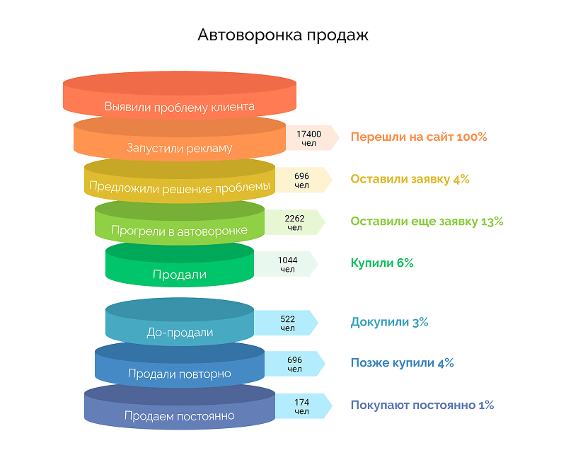

Посетитель, который пришел на сайт или в блог случайно или с неопределенными намерениями (просто посмотреть), может уйти ни с чем, так и не став покупателем. Эту ситуацию можно назвать наиболее неприятной для владельца сайта. Поэтому одно из важнейших направлений, в которых работает маркетинг, это конверсия – превращение посетителей сайта в покупателей. Автоматизированная воронка продаж является инструментом повышения конверсии, доступным каждому владельцу сайта.

Что такое автоворонка простыми словами
Простыми словами, воронка продаж (англ. sales funnel) – это хорошо продуманный путь от праздного интереса до продажи, по которому необходимо провести человека, который впервые зашел на сайт, чтобы увеличить шансы его превращения в покупателя. Он состоит из нескольких этапов, на каждом из которых ставятся и выполняются определенные задачи:
- Контакт. Контактом может быть просмотр рекламного ролика, карточки товара или посещение торговой точки.
- Заинтересованность. Товар вызывает интерес и желание больше о нем узнать.
- Потребность. Формируется понимание, что продукт решает проблему или закрывает боль.
- Продажа.

Автоматическая воронка продаж – это автоматизированный процесс сопровождения посетителя от момента первого контакта до продажи без участия людей.
Автоворонка продаж не обязательно должна полностью соответствовать приведенной классической модели. Для разных сфер деятельности этапы могут немного отличаться, т.к. где-то есть своя специфика, которую нужно учитывать. Но принцип, лежащий в основе автоворонки, общий для всех. Общей чертой можно назвать также воронкообразность схемы, на которой каждая последующая ступень меньше предыдущей. На каждой ступени отсеивается часть посетителей, до последней ступени доходит лишь определенный процент, который и зависит от эффективности автоворонки.
Зачем бизнесу автоворонки продаж
В инструментах конверсии нуждается каждый бизнес, даже если качество производимого продукта выше, чем у конкурентов. За внимание покупателя ведется активная борьба, продажи автоматически получает тот, кто выигрывает эту борьбу, просто за счет осведомленности целевой аудитории и убедительности предложения. Если бы средний покупатель действительно разбирался, какой продукт на рынке самый лучший по качеству и цене, это отняло бы у него все свободное время. Поэтому, несмотря на то, что кто-то действительно так делает, основная масса покупателей отдает предпочтение тому продукту, который наиболее убедительно представлен.
Представление продукта бывает разным, сюда относятся рекламные кампании, нацеленные на осведомленность ЦА, и индивидуальная работа с человеком, проявившим заинтересованность, на месте. Автоворонка - это инструмент взаимодействия с заинтересованным потребителем, ее настройка позволяет экономить на штате менеджеров, применяя их только на определенном этапе готовности клиента сделать заказ или в особых случаях. Автоворонка подойдет, если вы хотите:
{kind=link}
- уменьшить расходы на конверсию;
- оптимизировать рекламный бюджет с помощью настройки рекламы;
- минимизировать отток клиентов;
- повысить общую выручку;
- увеличить срок жизни клиента;
- увеличить пожизненный доход с одного покупателя.
Роль автоворонок в маркетинге компании
Мы не рекомендуем рассматривать автоворонку продаж отдельно от остальных маркетинговых инструментов. Лучшее решение – добавить ее в общую маркетинговую стратегию, понять ее потенциал и использовать его не только для решения ситуативных задач, но и для повышения эффективности всей стратегии.
{kind=link}
Контент-маркетинг
Использование автоворонки продаж подразумевает создание материалов,форму которых легко можно видоизменить и разместить в других местах. Например, из статьи можно делать презентацию, а из лекции на вебинаре – статью. Это не займет много времени, а переупакованный контент - например, статьи - станет дополнительным источником лидов.
Работа с ЦА
Работа с автоворонками неминуемо принесет вам опыт специалиста отдела маркетинга: вам придется учиться составлять уникальное торговое предложение, ломать голову над позиционированием, анализировать потребности ЦА и искать преимущества продукта перед конкурентами. Сама автоворонка станет источником обратной связи, отзывов и комментариев от пользователей сайта, которую вы также научитесь анализировать и использовать в работе.
Реклама
Автоворонка продаж начинается с контакта, а первый контакт почти всегда происходит с рекламой. Опыт создания автоворонки помогает узнать, как настроить рекламу и дает понимание впечатления, которое реклама производит на ЦА, позволяет грамотно ее скорректировать.
Продажи
Автоворонка – это инструмент продаж. Анализируя сценарии, популярные у пользователей, проходящих автоворонку, и кейсы других компаний, можно многое сказать о потребительской психологии.
Психология автоматической воронки продаж
Базовые психологические принципы, лежащие в основе механизма действия автоворонки, сформулировал американский маркетолог и автор Элиас Льюис в своей книге «Психология продаж и реформирования». Он назвал их принципами бизнеса в условиях конкуренции:
- привлекать;
- заинтересовывать;
- убеждать.
Это технология разогрева будущих покупателей, которая постепенно повышает градус вовлеченности: любопытство превращается в интерес, затем в потребность, после чего совершаются покупки.
Целевая аудитория и матрица товара
Целевая аудитория – первое, о чем нужно иметь представление при работе с автоворонкой. Чем точнее и подробнее выписана целевая аудитория, тем лучше. Половозрастных данных в стиле «женщины от 20 до 50 лет» всегда недостаточно. Точное представление о целевой аудитории необходимо, чтобы сблизиться со своим потенциальным покупателем, научиться говорить на его языке и транслировать его ценности.
Матрица товара – это номенклатура всех предложений в рамках одного продукта. Предложений должно быть много, потому что таким образом повышается вероятность заинтересовать аудиторию. Самый простой пример – версии или тарифы. Один и тот же курс можно продавать в базовом варианте (ролики, проверка самостоятельных работ, диплом) и в расширенном варианте с поддержкой (то же самое + личный наставник, дополнительные материалы, консультации по окончании курса). Один и тот же телефон продается в версиях «лайт» и «про» и т.д. Тот же продукт, но разный чек и разный статус у владельцев.
Стадии готовности к покупке по Райану Дайссу
Райан Дайсс разрабатывал системы пошагового маркетинга для ухода от чрезмерной концентрации на продажах, в пользу построения долгосрочных отношений на каждом шаге. Распространенной маркетинговой ошибкой можно назвать попытку перескочить с этапа контакта сразу на этап продажи. Это похоже на предложение пожениться, сделанное девушке, которая только что впервые вас увидела. Путь к продажам не менее емок, т.к. это тоже путь выстраивания отношений. По Дайссу он носит название Consumer Journey– путь потребителя, и состоит из следующих этапов:
- воронка прогрева;
- воронка лидов;
- воронка продаж.
Основа вовлечения - специальный пробный продукт, который не просто показывает клиенту функционал, но позволяет ему частично закрыть боль или решить проблему.
Какому бизнесу необходима комплексная автоматизация воронки продаж
Автоворонка полезна там, где импульсивное решение о покупке практически никогда не принимается. Например, если домохозяйке нужно средство для мытья ванной, она может купить его в первом попавшемся магазине или заказать онлайн на первой же платформе, которую найдет в поисковике, потому что это средство первой необходимости. Если же речь идет о покупке брендового крема для лица, гораздо больше времени будет потрачено на взвешивание всех за и против. Дорогие приобретения, например, автомобиль или квартиру, обдумывать можно годами. Это значит, что нужна автоворонка продаж и самому клиенту, т.к. хорошо его проинформирует, раскроет положительные стороны продукта, в некоторых случаях позволит протестировать продукт, таким образом поможет принять окончательное взвешенное решение. Автоворонка подходит:
{kind=link}
- инфобизнесу;
- интернет-магазинам;
- в оптовых продажах;
- в розничных продажах;
- В2В;
- поставщикам услуг;
- частным образовательным учреждениям и онлайн-платформам;
- юристам, психологам, представителям прочих консультативных профессий;
- застройщикам;
- автодиллерам;
- производителям брендовой продукции.
Виды воронок
Классификация автоворонок разнообразна и зависит от выбранного критерия, например, платформы взаимодействия или целевого действия. Вот некоторые из них.
По функциональности
Автоворонки, нацеленные на выполнение целевого действия. Это может быть:
- приобретение товара;
- подписка на рассылку или на профиль;
- регистрация на сайте;
- участие в ивенте, вебинаре или оффлайн-мероприятии;
- вовлечение в запуск инфопродукта;
- тестирование продукта (например, прохождение бесплатного ознакомительного модуля онлайн курса).
По типу платформы
В зависимости от того, на какой платформе происходит взаимодействие с клиентом, специфика автоворонок может различаться. Платформы бывают следующих типов:
- социальная сеть;
- email-рассылка;
- чат бот;
- мессенджер.
По сложности
Линейная автоворонка - это самый простой вариант: последовательность действий (например, отправка писем), не учитывающая реакцию.
Вариативная автоворонка – это последовательность действий, основанная на обратной реакции. Например, следующее письмо высылается в зависимости от реакции на предыдущее.
Вариативная автоворонка может быть простой или сложной, в зависимости от количества и продуманности сценариев взаимодействия.
Воронка в email-маркетинге
Это работа с подписавшимися, поэтому переход из посетителя в подписчика - приоритетная задача в самом начале взаимодействия. Для этого используются все места, где возможны пересечения – сайты, соцсети, интернет-магазины и т.д. Основной способ достижения успеха – лид-магнит. Им может быть:
- полезный контент в обмен на данные – гайд, инструкция, бесплатный видеоурок, статьи по теме;
- персональная скидка или подарок по промокоду;
- доступ к закрытому информационному разделу ресурса;
- социальное доказательство – статистические данные о количестве подписчиков (200 тысяч человек уже сделали свой выбор).
После подписки начинается этап рассылки и открывает его приветственная серия писем. Это письма, позволяющие собрать и проанализировать обратную реакцию пользователя, чтобы подобрать для него более персонализированный вариант рассылки. Сюда относятся:
- благодарственное письмо за подписку;
- письмо с описанием программы лояльности;
- приглашение присоединиться к группам в соцсетях;
- аргументированное письмо с проработкой типичных возражений и описанием выгод;
- обучающие письма с лайфхаками, секретами, полезной информацией.
Каждое письмо должно вести подписчика ниже по автоворонке, его задача – открывать подписчику что-то ценное каждый раз, когда он читает письмо. В письме должны быть ссылки, переходя по которым можно совершить целевое действие – подписаться на соцсети, скачать пробную версию продукта и т.д. Перейти по этим ссылкам - это и есть продвижение по автоворонке, поэтому они должны быть качественно оформлены, заметны, а весь сопутствующий контент должен пробуждать интерес к ним.
По ссылке из письма, предлагающего купить впервые, подписчик попадает на сайт компании. Сайт – главный инструмент продаж для email-маркетинга, там пользователь подписывается на рассылку и туда же возвращается в случае успешного прохождения автоворонки. Оформление сайта, понятный и удобный интерфейс, простота взаимодействия с элементами, безопасность – все это составные части из которых будет формироваться мнение о вашей компании. Изучайте user experience.
Другие разновидности воронок
- Автоворонка оффлайн-событий. Главное здесь – пригласить на мероприятие как можно больше представителей ЦА. Автоворонка по сравнению с обычной рекламой создает эффект прогрева, а не просто информирует.
- Лобовой трафик. Автоворонка прямых продаж: реклама – лендинг – оформление заказа. Недостаток такой воронки в том, что она не разогревает, перед покупкой у клиента с компанией не налаживается никаких отношений. Это неплохо работает на западе, но в странах СНГ такие автоворонки увеличивают продажи только недорогих товаров.
- Автоворонка консультаций. Реклама консультаций, позволяющая получить представление об услуге уже онлайн. Достаточно затратная, но эффективная.
- Автоворонка запуска проекта. Помогает проводить события с определенной периодичностью. Например, актуальна для регулярных мастер-классов, проводящихся несколько раз в год.
- Автовебинарная воронка. Использует один успешный вебинар в записи, как демонстрацию деятельности компании. Реклама вебинара крутится постоянно, сам вебинар доступен к просмотру в любой момент, но при просмотре создается видимость живого мероприятия.
Преимущества применения автоворонок
{kind=link}
- Увеличение постоянного дохода компании с отдельного клиента. Автоворонка лучше чем реклама мотивирует пользователя покупать на всех этапах взаимодействия, в том числе при совершении второй, третьей и последующих покупок.
- Снижение количества отказов. Грамотно выстроенная автоворонка уже содержит в себе инструменты преодоления возражений и сомнений.
- Повышение конверсии – вероятности конвертации посетителя в покупателя. Интерактивное взаимодействие во много раз эффективнее статичной рекламы.
- Рост прибыли через повышение продаж. Благодаря более высокой конверсии продажи растут, а с ними и прибыль компании.
- Оптимизация бюджета, снижение расходов на привлечение покупателей. Не нужно нанимать менеджеров для общения с каждым случайным постеителем.
- Повышение эффективности рекламы при меньшей стоимости. Автоворонка настраивается один раз и работает с неограниченным числом людей.
- Персонализированное общение с клиентом. Хорошие сценарии взаимодействия создают у потребителя впечатление, что вы знаете, как помочь именно ему, он начинает относиться к вам как к другу.
- Комфортный способ получения информации. Автоворонка может быть разнообразной и создавать удобство взаимодействия для всех категорий клиентов.
- Повышения показателя открываемости писем рассылки. Автоворонка – это взаимодействие и общение, а просто рассылка часто воспринимается как навязчивый спам.
Классическая схема автоворонки продаж
{kind=link}
- Входящий трафик. Это весь объем уникальных посетителей, просматривающих ваши страницы, который удалось привлечь. Увеличивается с помощью рекламы и оптимизации для поисковых машин (SEO).
- Лид-магнит (Lead magnet). Маленький полезный подарок, получить который можно после ввода данных (email адрес, телефон) или регистрации (которая предполагает ввод тех же данных). Это может быть инструкция, чек-лист, бесплатное обучающее видео.
- Страница «спасибо». Это благодарность за взаимодействие (в данном случае, за целевое действие с лид-магнитом). Рекомендуем красиво ее оформить и составить оригинальный благодарственный текст, желательно из одной фразы.
- Трипваер (Tripwire). Трипваер - это очень выгодное предложение, которое очевидно стоит своих денег. Здесь начинается конвертация лида в покупателя, а уже действующему покупателю продать повторно будет легче, чем новому посетителю. Критерии трипвайера – полезность, низкая стоимость, простота приобретения.
- Отступ. Это прием из телесериалов, каждая серия которых обрывается на самом интересном месте. Каждый ваш продукт тоже может обладать таким свойством – раскрывать новую потребность, которую закрывает следующий. Например, лид-магнит может способствовать покупке трипвайера, а трипвайер – создавать необходимость приобретения основного продукта.
- Основной продукт (Сore Offer). Это продукт, составляющий основные продажи. На него нужно ориентироваться, выполняя всю подготовительную работу, т.к. покупка основного продукта – это тот самый момент истины, ради которого создавалась вся автоворонка. К настоящему моменту посетитель уже не просто разогрет, он стал покупателем благодаря трипвайеру и осознал потребность в продукте благодаря отступу, сейчас самый лучший момент, чтобы показать ему главный продукт.
- Допродажи или максимизатор прибыли (Profit Мaximize). Основная цель достигнута, но останавливаться на этом рано. У вас наверняка есть дополнительные предложения, сопутствующие или просто другие продукты, значит их тоже можно предложить пользователю. Отдельной категорией здесь являются платные подписки или любые фишки, позволяющие раз в оговоренный период списывать деньги.
- Дорожка возврата. Это зацепка, которую можно использовать, чтобы дать клиенту повод вернуться снова. Дорожка возврата важный инструмент, т.к. позволяет вам сохранять связь с покупателем даже после совершения им всех покупок и других целевых действий.
Правила создания лид-магнита и метод Р5
- Должен соответствовать тематике продукта.
- Должен быть ценным для пользователя и частично закрывать его боль.
- Может быть не самостоятельным продуктом, а фрагментом, выдержкой и т.д. Но если это часть целого, она должна быть законченной.
Чтобы не разочароваться в лид-магните, как в инструменте, нужно учитывать составляющие автоворонки. Их 3 – финансовые стратегии, технические модели, маркетинговая составляющая. Структура автоворонки будет меняться в зависимости от того, какое решение будет принято при выборе каждой составляющей.
Разумное формирование автоворонки состоит из пяти шагов и называется методом проектирования автоворонок Р5:
- разведка;
- разработка основных маркетинговых элементов;
- тестирование минимальной воронки на работоспособность;
- добавление элементов конверсии;
- расширение автоворонки.
Таким образом вы настраиваете воронку в правильной последовательности – сначала маркетинговая составляющая, за ней финансовая модель, и последним идет техническое воплощение.
Инструменты создания автоворонки продаж
При создании автоворонки используются следующие инструменты:
- пуш-уведомления;
- страница «Спасибо»;
- поп-ап;
- хеллоубар;
- автодозвон;
- вебинары;
- сайт;
- прямые звонки;
- визитка;
- коммерческое предложение;
- чат-бот;
- СМС;
- CRM;
- соцсети;
- тестирование и опросы;
- мессенджеры;
- лендинги;
- всплывающие окна;
- лид-магниты.
Некоторые специализированные сервисы предлагают интеграцию нескольких инструментов из этого списка. Чат-боты для общения с клиентами работают на одной или нескольких платформах одновременно: ВК, Facebook, Viber, Instagram, Telegram, Whatsapp. Поговорим о самых основных и обязательных элементах автоворонки и сервисах, в которых они представлены.
CRM-система
Это основа, т.к. в ней хранится и обрабатывается вся имеющаяся и поступающая информация о клиентской базе.
AmoCRM, «Битрикс24», Getcourse, TimeDigital CRM, Infusionsoft, ClickFunnels.
Аналитические инструменты
Сервисы аналитики позволяют отслеживать каналы привлечения клиентов, видеть самые прибыльные каналы, различать их по уровню конверсии трафика.
Roistat, Rick, Autofunnels, Getcourse, GetResponse, FunnelFlux, Infusionsoft, ClickFunnels.
Интеллект-карты
Сервисы визуализации вашей схемы в виде карт с подробной прорисовкой каждого этапа, триггеров, вариантов реакций пользователя и вариантов ответа программы.
XMind, Mindomo, Mindmap, Autofunnels, FunnelFlux.
Чат-боты
Сервисы вступают в переписку с пользователем вместо оператора, ведут его по заранее заданному сценарию, информируют, помогают сориентироваться в продуктовой линейке.
Many Chat, TextBack, Гамаюн.
Онлайн-чат
Помогает удержать клиента и начать общение с новым потенциальным покупателем.
Jivosite, Chatra, Redhelper, Popup Maker, Convead, MSSG.
Email-рассылка
Классический и не устаревающий инструмент маркетинга, хорошо совместимый с любым другим инструментарием, представленный многими сервисами.
Mailchimp, Unisender, Getresponse, Carrot Quest, Autofunnels, Getcourse, TimeDigital CRM, GetResponse, Infusionsoft, ClickFunnels.
Push-уведомления
Сервисы для напоминания или рассылки мгновенных новостных сообщений. Много возможностей, особенно помогает бизнесу оставаться с клиентом на связи.
Sendpulse,Push4site, Autofunnels, Getcourse.
Всплывающие окна
С их помощью можно собирать лиды и напоминать пользователям о незаконченных действиях, которые были брошены на полпути.
Carrot Quest, Autofunnels, Getcourse.
A/B-тестирование
Помогает находить слабые места в цепочке, выяснять, какие инструменты не работают в полную силу и почему.
Carrot Quest, Autofunnels, GetResponse, Many Chat.
17 триггеров в автоворонках, полезных бизнесу
- Боль или проблема, которую срочно нужно решить.
- Достижения. Регалии, показатели авторитетности, успешная статистика, дипломы, награды и т.д. – все это выглядит привлекательно, работает на ваш имидж и повышает доверие.
- Эксклюзив. Всем хочется купить товар, которого нет ни у кого. Понятно, что такой не продается в интернете через автоворонку продаж, но создать ощущение эксклюзивности можно.
- Единомышленники. Сообщество укрепляет уверенность в правильном выборе.
- Перспектива. Позвольте клиенту уже сейчас насладиться и поделиться с другими той радостью, которую ваш продукт принесет ему в итоге.
- Гарантия. Надежность подкупает: пообещайте вернуть деньги, если товар некачественный, заменить с бесплатной доставкой, отремонтировать и т.д.
- Подробности. Расскажите клиенту то, чего он раньше не знал, тогда он будет уважать вас как эксперта в своем деле.
- Срочность. Предложите нечто совершенно уникальное с ограничением по времени – только сегодня, только до конца месяца.
- Простота. Клиент должен знать, что покупка не связана вообще ни с какими сложностями.
- Привлекательность. Это относится в большей степени к лицу компании. Желательно, чтобы этот человек был на виду и умел красиво подавать свою жизнь.
- Привычка. Очень сильный триггер. Подумайте, что нужно сделать, чтобы покупать у вас привыкали.
- Уже заплатили. Если продавец ведет себя так, будто покупка уже совершена, покупатель привыкнет к этой мысли и ему будет проще расстаться с деньгами.
- Предупреждение возражений. Т.к. типичные возражения известны заранее, лучше всего закрыть каждое еще до того, как клиент их озвучит.
- Жадность. Один из самых популярных триггеров в маркетинге.
- Эмоциональность. Человек, захваченный эмоциями, поступает спонтанно.
- Статусность. Иногда кажется, что именно определенной вещи не хватает человеку, чтобы приобрести новый статус.
- Ассоциативность. Клиент не всегда понимает, зачем ему товар. Объяснить доступно вы сможете только через наглядные примеры – ассоциации.
Как создать и настроить автоворонку продаж
Для начала необходимо хорошо понимать вводные данные. Для этого задайте себе ряд вопросов и выпишите ответы.
- Что - ваш главный продукт (Core Product).
- Перечислите список инструментов, которые предположительно будут задействованы.
- Какие триггеры вашей целевой аудитории вы намерены использовать.
- О чем вы собираетесь информировать будущих клиентов.
- Как вы представляете себе общий сценарий автоворонки.
- На основе какого программного обеспечения будет функционировать техническая часть, как вы собираетесь вносить изменения.
- Какая служба поддержки будет обслуживать ваших посетителей, как вы ее создадите.
Если удалось ответить подробно на каждый вопрос, общая картина понятна, а сомнительные моменты прояснены, переходим к чек-листу самого необходимого бизнесу:
- Анализ рынка и ЦА.
- Разработка стратегии.
- Разработка продукта или продуктовой линейки.
- Контент для воронки (тексты).
- Создание посадочных страниц.
- Разработка дизайна.
- Привлечение трафика.
Шаги создания автоворонки
{kind=link}
- Проектировка товарной матрицы.
- Выявление сценариев поведения потенциальных клиентов.
- Разработка интеллект-карт.
- Создание необходимых элементов (лендинги, лид-магнит, автовебинар и т.д.)
- Подключение необходимых сервисов.
- A/B тестирование.
- Подготовка к запуску автоворонки.
- Установление контакта с аудиторией.
- Создание источников трафика.
- Аналитика, корректировки.
Особенности создания лид-магнита
Правила работы:
- в лид-магните четко сформулирована боль целевой аудитории;
- предложено бесплатное решение;
- содержится призыв (Call To Action);
- преследуется цель – получить контакты пользователя;
- лид-магнит можно получить сразу;
- использовать лид-магнит следует везде.
Чтобы создать лид-магнит, нужно:
- проанализировать клиентскую базу, составить портрет клиента, выяснить его основную боль и сформулировать решение;
- если нет клиентской базы, поработать со статистикой поисковых запросов по тематике, с их помощью определить ключевую боль.
- Лид-магнит для автоворонки можно собрать по следующей формуле:
запросы из Вордстат формируются в тематические группы;
- собирается одна группа слов;
- выбирается формат для лид-магнита (шаблон, доступ на оффлайн-ивент, чек-лист, электронная книга, пробная версия ПО, приглашение, полезные материалы – советы, рецепты, лайфхаки, схемы, инструкции, калькуляторы и утилиты);
- определяются слова-помощники (эффективный, пошаговый, мощный, бесплатно, результат, сроки, ценность, топ);
- пишется обоснование пользы магнита (что конкретно он поможет сделать или получить);
- добавляются усилители из поисковых запросов;
- определяется слово-призыв, с которого начинается фраза: воспользуйся, скачай, научись, найди, открой, попробуй;
- лид-магнит собирается из частей, доводится до читабельного состояния и размещается.
Не ограничивайтесь одним лид-магнитом, соберите и протестируйте несколько.
Основные принципы работы
- Да или нет. Это принцип разработки сценариев взаимодействия с клиентом на основе его выбора. Любой его выбор может быть классифицирован как позитивный (да) или негативный (нет). Вы предлагаете открыть письмо, пользователь открывает – это да. Вы приглашаете за лид-магнитом, пользователь не приходит – это нет.
- Призыв к действию (Call To Action). Должен быть в конце каждого этапа автоворонки. Может быть связан с основным текстом или нет. Обычно это призывы подписаться, поставить оценку, забрать подарок, купить трипвайер.
- Непрерывное движение. Автоворонка должна быть организована так, чтобы каждый лид двигался по ней непрерывно. Не обращайте внимания на тех, кто отсеивается, не нужно их ждать или возвращаться за ними. Нельзя допускать простои и промедления, каждый лид должен все время быть в процессе.
- Не зацикливайтесь на трудных клиентах. Такая категория всегда есть, если вы будете пытаться добиться от них результата во что бы то ни стало, то скорее всего только разозлите их, при этом упустите более сговорчивых и лояльных.
- Двигайтесь к успеху постепенно. Даже если вы нанимаете профессионалов, быстро организовать идеально работающую схему не выйдет. Запаситесь терпением и будьте готовы работать дольше чем хочется.
- Создавайте автоворонку в четкой последовательности 5 этапов Р5, которые перечислены в разделе «Классическая схема автоворонки продаж».
Полезные советы
- Ориентируйтесь на боли. Расставание с деньгами само по себе может считаться для покупателя болью и нежелательным действием. Чтобы он делал это не задумываясь, нужно, чтобы продукт закрывал еще большую боль и таким образом попадал в перечень жизненно необходимых.
- Интерактив лучше статики. С этой точки зрения можно сравнить между собой автоворонки на разных платформах – email-рассылку и чат-бот. В рассылке открываемость писем сохраняется в районе 25%, в чат-боте достигает 90%.
- Автоворонка – не заменитель менеджера. Это автопилот для недорогих продуктов. Если вы – крупный бренд, продающий эксклюзивные товары, без менеджера обойтись не получится, живое общение в XXI веке – прерогатива богатых людей.
- Контент должен быть емкий. Даже если посетитель внутренне согласится уделить время вашему контенту, его почти наверняка отпугнет длительность видеоролика в пару часов или объем статьи в десяток страниц «ворда». Рекомендуется написать короткие статьи и оставить в доступе только короткие видео. Выводите на первый план содержание: максимум качественного контента за минимум времени. Если же материалы большие, проверьте инструменты навигации (поиск нужного), если их нет - придумайте. В любом случае длительность и объем лучше снизить.
- На возврат инвестиций непосредственно влияет прогревание клиентов. Это неочевидная на первый взгляд связь подтверждается статистически, особенно в сравнении с автоворонками прямых продаж.
- Важно ощущение общения вживую. Лаконичный текст от лица человека, минимальный или умеренный дизайн, обстановка, напоминающая обыкновенную переписку – все это позволяет поверить в процесс диалога.
Схемы автоворонок продаж для инфобизнеса
Предлагаем 5 схем для инфобизнеса разной сложности. Не следует думать, что самые сложные автоворонки являются самыми лучшими, это зависит от стоимости продукта, его востребованности и узнаваемости на рынке. Например, для недорогих продуктов простые автоворонки работают лучше, чем вариативные. Но дорогие товары с простыми воронками продаются плохо.
- Простая воронка с лид-магнитом. Состоит из страницы оформления подписки, лид-магнита и трипвайера. Как только посетитель подписался, система отправляет ему бесплатный материал и предложение приобрести трипвайер.
- Сложная с лид-магнитом. Как только посетитель оформил подписку на странице, он получает трипвайер, лид-магнит, доступ к бесплатным материалам, доступ к тестовой версии основного продукта, сопровождение демонстрации основного продукта триггерными письмами на почту.
- Бесплатный тренинг ВКонтакте. Пост или страница для подписки, вводные задания, основные задания тренинга, вебинар, подводящий к необходимости приобретения основного курса в конце, триггерные письма и внесение в клиентскую базу.
- Воронка вебинара. Страница для подписки, разогревающий контент – письма с историями и описаниями вебинара, напоминающие письма, вебинар, на котором представляется и реализуется основной продукт, триггерные письма, внесение в клиентскую базу.
- Воронка автовебинара. Аналогична воронке вебинара, но сам вебинар в ней заменен автовебинаром (записью успешного вебинара), в остальном ничего не меняется.
Примеры успешных автоворонок продаж

Мировые бренды воплощают своим примером мечту каждого бизнесмена, они уже не нуждаются в автоворонках, т.к. за их продуктом покупатели сами стоят в очередях. Далее рассказываем о главных продуктах четырех компаний с мировым именем.
- Apple. Основной продукт компании - iPhone, т.к. его продажи составляют основную часть прибыли компании, остальная продуктовая линейка строится вокруг него. Это один из лучших примеров в мире, когда компании не нужно привлекать внимание к телефонам, а наоборот – клиенты готовы отстаивать за ними многодневные очереди.
- Tesla Motors. Основным товаром Tesla Motors являются электромобили, а дополнительная линейка настолько широка, что включает в себя даже батарейки.
- Adidas. Эта фирма производит множество товаров, в том числе духи, повседневную одежду и аксессуары, но основным ее продуктом остается спортивная экипировка и инвентарь. С годами основное направление деятельности компании не меняется.
- KFC. Основной продукт компании – блюда из панированной курицы. Дополнительно в сети ресторанов быстрого питания можно купить салаты, роллы, фри, сладости, напитки, как и в любом фастфуде. Однако клиент KFC всегда возвращается именно за куриными лакомствами.
Что делать, если пользователь «застрял» на одном из этапов автоворонки продаж
Такое происходит чаще чем хотелось бы. Мы уже советовали не зацикливаться на трудных клиентах, которые решили отказаться двигаться дальше, но бывают ситуации, когда клиент не является трудным, ему просто нужен небольшой дополнительный стимул. В этом случае задействуются дополнительные сценарии с заранее заготовленными вариантами. Вот ситуации, когда их следует задействовать:
- не переходит к следующей покупке длительное время;
- перестал читать письма рассылки;
- после ознакомления с основным продуктом дальнейших действий не последовало.
Сценарии такого рода обычно носят общий характер, т.к. детальная разработка индивидуального подхода к каждому застрявшему обойдется вам слишком дорого, а смысл от нее будет только при продаже премиальных товаров. Но премиальными товарами занимаются хорошо обученные менеджеры, т.к. ни один бренд, реализующий эксклюзивную продукцию, не поручит ее продажи автоворонке.
Что можно сделать, чтобы изменить ситуацию:
- подарить персональную скидку (если скидка уже есть, можно ее продлить или увеличить);
- отправить письмо, подготовленное для конкретного случая, когда нужно растормошить застрявшего пользователя;
- подарить больше полезного контента (актуально для инфобизнеса);
- дать возможность для повторного, возможно более широкого бесплатного тестирования продукта.
Ошибки при создании автоворонки продаж
Список из 14 самых распространенных ошибок желательно выучить наизусть или повесить на видное место, чтобы всеми силами избегать их в работе. Каждая из них способна уничтожить буквально все плоды работы над воронкой продаж. Если у вас нет опыта, набивайте руку осторожно, консультируйтесь с профессионалами, изучайте пособия и реальные примеры, обязательно проверяйте гипотезы в действии.
{kind=link}
- Выбор ошибочной стратегии взаимодействия.
- Выбор ошибочного сценария взаимодействия с пользователем.
- Возможность улучшения сценария не используется.
- Ошибки в последовательности действий.
- Огрехи технического характера.
- Гипотезы приняты в работу без предварительной проверки.
- Перфекционизм – желание создать все совершенным образом, приводящее к неоправданно тщательной работе с деталями.
- Ошибка в выборе целевого сегмента.
- Смешение разных сегментов и ниш ЦА, одна модель взаимодействия со всеми.
- Невнимательность к ценностям клиента, желание продавать во что бы то ни стало.
- Раскрыт и задействован не весь потенциал воронки.
- Несоответствие функционала воронки ожидаемым результатам, непродуманность.
- Представления об автоворонке, как о механизме, который достаточно создать и который не требует управления.
- Пренебрежение пользой предлагаемого контента.
Часто задаваемые вопросы
Без опыта и знаний – вряд ли. Нужно хотя бы теоретически хорошо изучить предмет и опыт других компаний. Технический инструментарий доступен каждому, как и инструкции, видеоуроки, полезные материалы, но опыт не появляется от просмотра роликов. Но мы советуем не тренироваться на серьезных проектах, а приобрести услугу у профессионалов.
Существует несколько ключевых вещей:
- сайт, чтобы было куда приводить трафик и откуда продавать;
- трафик, чтобы было кого конвертировать в клиентов;
- инструменты автокоммуникаций – чат-боты, рассылки и так далее;
- человек, создающий контент для воронки – копирайтер или контент-менеджер;
- инструменты аналитики, чтобы понимать, работает ли ваша воронка, насколько она эффективна, что можно сделать, чтобы она продавала лучше;
- продукт, о котором и будет весь разговор.
В частичной автоматизации процесса. Просто воронка может направлять заявки операторам и менеджерам, а автоворонка позволит сократить человеческий ресурс в значительной степени, хотя и не может обойтись полностью без него.
Если мы говорим о работающей автоворонке, которая приносит результаты, то разработать ее можно за разные сроки - от месяца до бесконечности. В зависимости от квалификации создающего и сопутствующих причин сроки могут меняться как угодно. Теоретическую схему или алгоритм идеи можно собрать за 7-15 дней.
Предлагаем простые правила:
- не позволяйте клиенту выходить из воронки или оставляйте дорожку возврата;
- старайтесь договориться о предоставлении услуги или поставке товара на регулярной основе (за ежемесячную автоматическую оплату);
- оставляйте возможность отменить подписку и отказаться от любых рассылок, причем кнопку лучше не прятать, чтобы человек не чувствовал, что ему что-то навязывают.
Заключение
Автоворонка продаж постепенно становится мастхэвом для любого среднего бизнеса, позволяющим заметно экономить на персонале, при этом не обделять вниманием ни одного потенциального покупателя. Построить воронку с нуля можно, но мы не рекомендуем набивать руку на ответственных проектах, т.к. это чревато потерей части рекламного бюджета. Не самый дешевый, но однозначно лучший вариант – воспользоваться услугами специалистов и смотреть за их работой.
Советы напоследок:
- Не торопитесь. Лучше запуститься на неделю или месяц позже, но все перепроверить два раза. Даже в таких случаях бывают неожиданности, что уж говорить о преждевременных решениях.
- Пишите прозрачные тексты. Чем понятнее будет, в чем польза и смысл, какие бонусы можно получить и какие боли закрыть с помощью вашего продукта, тем меньше сомнений останется.
- Не пытайтесь использовать сценарии конкурентов, они могут у вас не пройти. Практика показывает, что все ситуации индивидуальны, это лучше учитывать сразу.